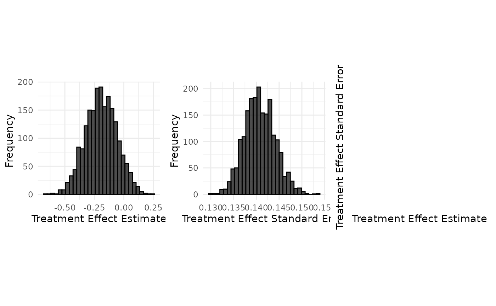
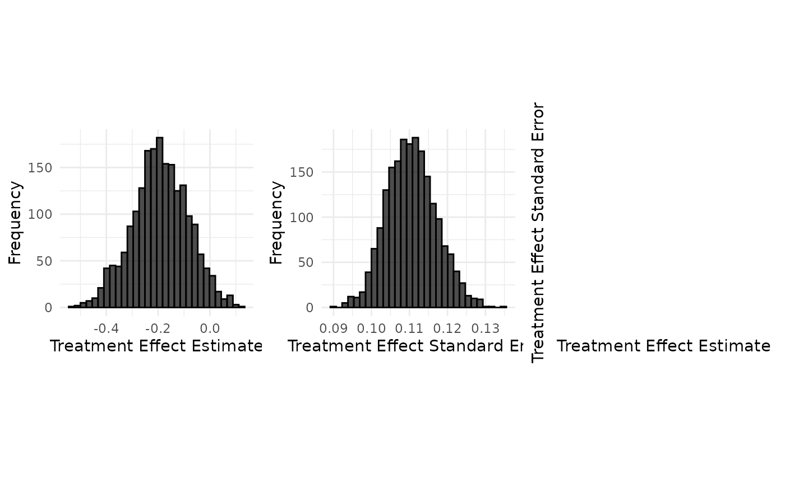

Data Generation : Teriflunomide case study (time-to-event endpoint)
2026-10-03
Source:vignettes/data_generation/Data_generation_teriflunomide.Rmd
Data_generation_teriflunomide.RmdTeriflunomide case study
Sources: Bovis et al (2022)
The source study is the pooled analysis of the adult TEMSO and TOWER trials of 14 mg teriflunomide; Table 4 of the TOWER paper by Confavreux et al (2014) reports it. The target study is a paediatric trial inspired by the TERIKIDS design. The endpoint is the time to first relapse.
The source treatment effect is the pooled log hazard ratio , with . The target treatment effect is , where is the drift.
set.seed(42)
config_path <- system.file("conf/case_studies/teriflunomide.yml", package = "BExTE")
case_study_config <- yaml::yaml.load_file(config_path)
format_case_study_config(case_study_config)| Parameter | Value |
|---|---|
| General | |
| Name | Teriflunomide |
| Summary Measure Likelihood | normal |
| Theta 0 | 0 |
| Endpoint | time_to_event |
| Null Space | right |
| Sampling Approximation | FALSE |
| Target | |
| Control (Target) | 57 |
| Treatment (Target) | 109 |
| Total (Target) | 166 |
| Treatment Effect (Target) | -0.415515443961666 |
| Standard Error (Target) | 0.266828713056808 |
| Maximum follow-up time (Target) | 1.846154 |
| Accrual period (Target) | 3.41 |
| Follow-up after recruitment (Target) | 0.923077 |
| Weibull shape (Target) | 0.72 |
| Weibull relapse-free probability (Target) | 0.442 |
| Source | |
| Control (Source) | 752 |
| Treatment (Source) | 731 |
| Total (Source) | 1483 |
| Treatment Effect (Source) | -0.393 |
| Standard Error (Source) | 0.081 |
| Maximum follow-up time (Source) | 2 |
The target trial design
In the original TERIKIDS design every participant could be followed for up to 96 weeks, so accrual would not affect the follow-up distribution. To study the effect of staggered accrual we use a modified fixed-calendar design: the maximum individual follow-up stays at weeks, but the database is closed weeks after the end of recruitment.
Patients enter over an accrual period of years, with calendar entry times . The database closes at , so the administrative censoring time of patient is
Control-arm heterogeneity is
,
so that
and
.
In the package
is the control_drift of a scenario and
is its drift.
Independent loss to follow-up is with for a prespecified probability of being lost over . The observed follow-up time and the event indicator are
design <- case_study_config$target
L <- design$max_follow_up_time
A <- design$accrual_period
Fu <- design$final_follow_up
# Only patients recruited before A + F - L are followed for the full L.
c(max_follow_up = L, accrual = A, final_follow_up = Fu,
proportion_with_full_follow_up = (A + Fu - L) / A)## max_follow_up accrual
## 1.8461540 3.4100000
## final_follow_up proportion_with_full_follow_up
## 0.9230770 0.7293029Creating the target data
source_data <- SourceData$new(case_study_config)
drift <- 0.2 # delta
control_drift <- 0 # kappa
treatment_drift <- drift + control_drift
target_sample_size_per_arm <- 185
target_data <- TargetDataFactory$new()
target_data <- target_data$create(
source_data = source_data,
case_study_config = case_study_config,
target_sample_size_per_arm = target_sample_size_per_arm,
control_drift = control_drift,
treatment_drift = treatment_drift,
summary_measure_likelihood = source_data$summary_measure_likelihood,
dropout_probability = 0.05,
event_time_distribution = "exponential"
)
c(theta_T = target_data$treatment_effect,
control_rate = target_data$control_rate,
treatment_rate = target_data$treatment_rate)## theta_T control_rate treatment_rate
## -0.1930000 0.5340000 0.4402734The arm rates follow from and :
read_function_code(rate_from_drift_logRR)## rate_from_drift_logRR <- function (arm_drift, source_rate)
## {
## return(source_rate * exp(arm_drift))
## }Aggregate data generation
Generation of aggregate data without sampling approximation
Usage
n_replicates <- 2000
data <- target_data$generate(n_replicates = n_replicates)
head(data)## treatment_effect_estimate treatment_effect_standard_error sample_size_per_arm
## 1 -0.3517472 0.1432327 185
## 2 -0.1546573 0.1438881 185
## 3 -0.2028978 0.1417119 185
## 4 -0.3259558 0.1493049 185
## 5 0.1238848 0.1392157 185
## 6 -0.0580501 0.1434024 185
## standard_deviation
## 1 1.948176
## 2 1.957089
## 3 1.927490
## 4 2.030767
## 5 1.893538
## 6 1.950483
target_data$plot_sample(data)
Implementation details
Under the primary proportional-hazards model the time to first relapse is exponential, . Each simulated trial is analysed with a Cox proportional-hazards model , and with are passed to the Bayesian borrowing procedures as in the other case studies.
Fitting one survival::coxph() per replicate would be far
too slow for the simulation grid, so the package solves the two-sample
Cox model directly. With a single binary covariate the risk set at an
event time is described entirely by the numbers still at risk in each
arm,
,
so the score and observed information reduce to
which a few Newton steps solve for every replicate at once. Event
times are continuous, so ties have probability zero and this agrees with
coxph() to machine precision. The patient-level version
below is what the vectorised code computes:
simulate_one_trial <- function(n_per_arm, control_rate, treatment_rate,
L, A, Fu, dropout_rate) {
n <- 2 * n_per_arm
arm <- rep(c(0, 1), each = n_per_arm)
rate <- ifelse(arm == 0, control_rate, treatment_rate)
entry <- runif(n, 0, A)
administrative <- pmin(L, A + Fu - entry)
event_time <- rexp(n, rate = rate)
dropout <- if (dropout_rate > 0) rexp(n, rate = dropout_rate) else Inf
data.frame(
time = pmin(event_time, dropout, administrative),
status = as.integer(event_time <= dropout & event_time <= administrative),
arm = arm
)
}
dropout_rate <- -log1p(-0.05) / L
set.seed(123)
trial <- simulate_one_trial(
n_per_arm = target_sample_size_per_arm,
control_rate = target_data$control_rate,
treatment_rate = target_data$treatment_rate,
L = L, A = A, Fu = Fu, dropout_rate = dropout_rate
)
fit <- survival::coxph(survival::Surv(time, status) ~ arm, data = trial)
c(estimate = unname(coef(fit)), standard_error = unname(sqrt(diag(vcov(fit)))))## estimate standard_error
## -0.2119895 0.1411929The package reproduces that fit exactly:
vectorised <- BExTE:::fit_two_sample_cox(
time = matrix(trial$time, nrow = 1),
event = matrix(trial$status, nrow = 1),
arm = trial$arm
)
c(estimate = vectorised$estimate, standard_error = vectorised$standard_error)## estimate standard_error
## -0.2119895 0.1411929Averaged over replicates, the estimates recover and the reported standard errors match their spread:
c(theta_T = target_data$treatment_effect,
mean_estimate = mean(data$treatment_effect_estimate, na.rm = TRUE),
mean_standard_error = mean(data$treatment_effect_standard_error, na.rm = TRUE),
observed_spread = sd(data$treatment_effect_estimate, na.rm = TRUE))## theta_T mean_estimate mean_standard_error observed_spread
## -0.1930000 -0.1924182 0.1407653 0.1340475Weibull sensitivity analysis
As a sensitivity analysis, event times are generated from a Weibull proportional-hazards model with conditional survival function , where is the common shape parameter and the control-arm scale. This implies a hazard ratio of . We use , based on the aggregate TERIKIDS relapse-free probabilities. The control scale is calibrated to reproduce the reported 96-week relapse-free probability , giving
and the treatment-arm scale is . The exponential model is recovered when .
Because multiplies the control hazard, and multiplying a Weibull hazard by a constant divides its scale by that constant raised to , control heterogeneity enters as .
weibull_data <- TargetDataFactory$new()$create(
source_data = source_data,
case_study_config = case_study_config,
target_sample_size_per_arm = target_sample_size_per_arm,
control_drift = control_drift,
treatment_drift = treatment_drift,
summary_measure_likelihood = source_data$summary_measure_likelihood,
dropout_probability = 0.05,
event_time_distribution = "weibull"
)
c(shape = weibull_data$weibull_shape,
control_scale = weibull_data$weibull_scale,
relapse_free_at_L = 1 - pweibull(L, weibull_data$weibull_shape,
weibull_data$weibull_scale))## shape control_scale relapse_free_at_L
## 0.72000 2.44676 0.44200Note that the two data-generating models are deliberately not nested: the exponential arm is calibrated on the source placebo relapse rate, the Weibull arm on the aggregate relapse-free probability, so they do not coincide at .
weibull_samples <- weibull_data$generate(n_replicates = n_replicates)
c(theta_T = weibull_data$treatment_effect,
mean_estimate = mean(weibull_samples$treatment_effect_estimate, na.rm = TRUE))## theta_T mean_estimate
## -0.1930000 -0.1876292Generation of aggregate data with sampling approximation
Usage
approximate_config <- case_study_config
approximate_config$sampling_approximation <- TRUE
approximate_data <- TargetDataFactory$new()$create(
source_data = source_data,
case_study_config = approximate_config,
target_sample_size_per_arm = target_sample_size_per_arm,
control_drift = control_drift,
treatment_drift = treatment_drift,
summary_measure_likelihood = source_data$summary_measure_likelihood
)
samples <- approximate_data$generate(n_replicates = n_replicates)
approximate_data$plot_sample(samples)
Implementation details
It may be simpler for evaluating the OCs to sample the summary data
from a normal distribution directly, instead of sampling data using the
true data generating process. This branch keeps the simpler follow-up
model in which every patient is observed for
max_follow_up_time: it samples the number of events in each
arm from a Poisson distribution, forms
,
and draws the summary measure from a normal distribution. It therefore
ignores the staggered accrual, the database lock and the loss to
follow-up, and is not the design described above.
See Data_generation_botox for details on aggregate normal data generation.